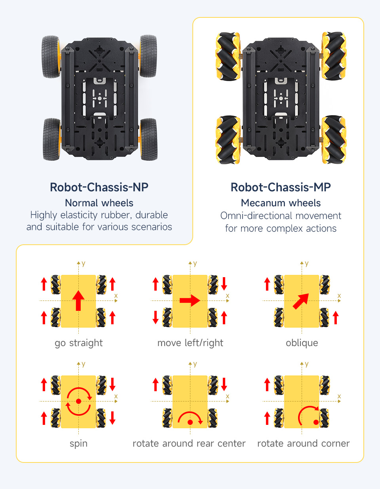

Welcome to our project, Aspire! We are students from San Diego Miramar College, and our rover is designed for lunar exploration, featuring mecanum wheels and gesture control for wireless navigation. It’s user-friendly and adaptable to various terrains, capable of moving in response to directional inputs.
This project aims to emulate NASA's lunar rovers, utilizing comparable design principles and technologies to deepen our understanding of robotics and space exploration.
Below is an illustration of how the rover's mecanum wheels allow it to move in various directions:
To control the mecanum wheels, we used C++ programming with the ESP32 microcontroller.
if (mpuData.xAxisValue < 0 && abs(mpuData.yAxisValue) < 15) { Serial.println("Straight Forward"); forward_wheel(FAI1,
FAI2); forward_wheel(FBI1, FBI2); forward_wheel(RAI1, RAI2); forward_wheel(RBI1, RBI2); delay(timeDelay); }
This function sets all four motors to move the rover forward.
Our rover is designed with the following key features:
Click the button for a fun fact about lunar exploration!